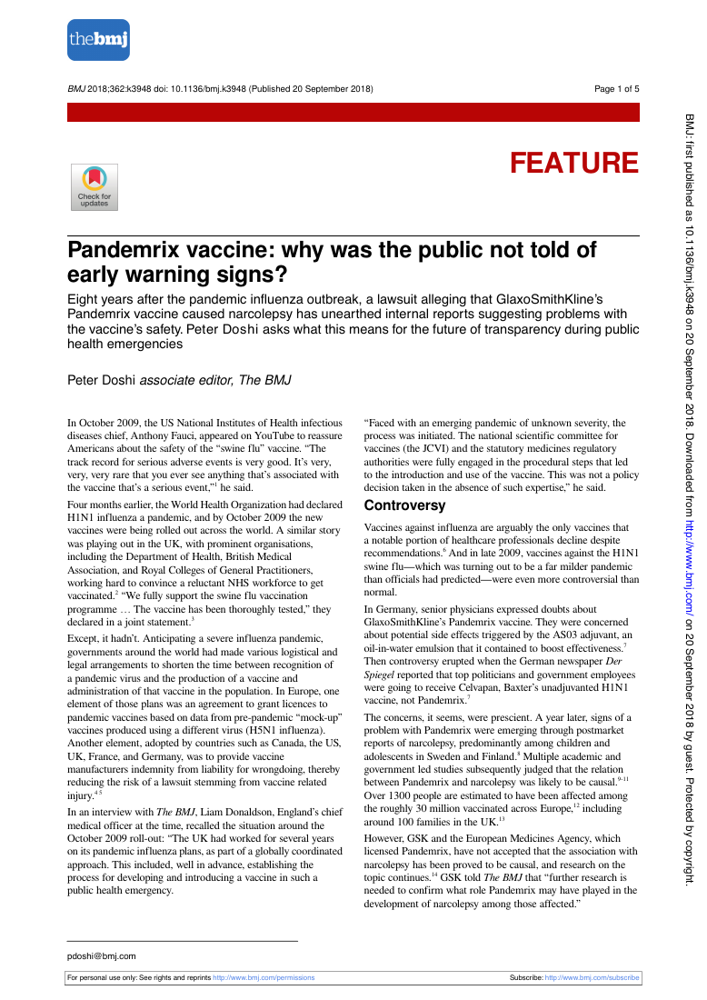
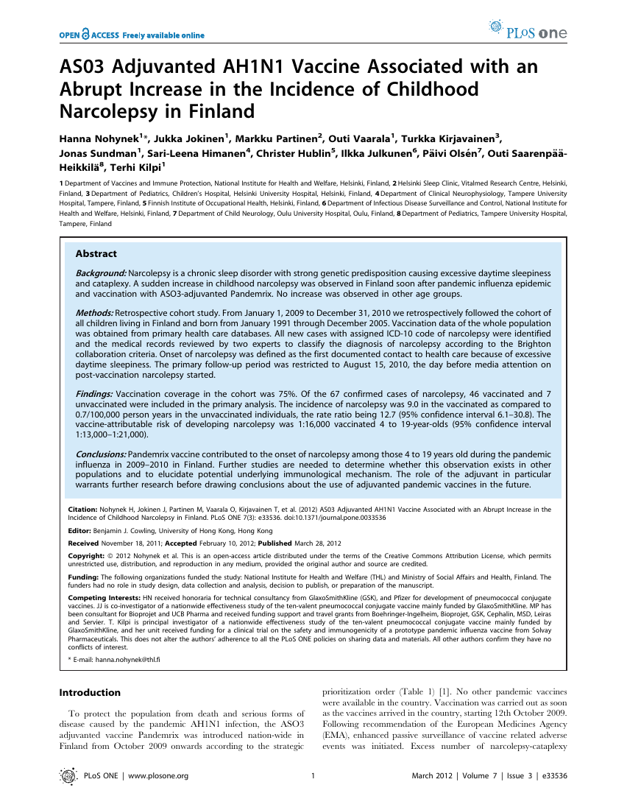
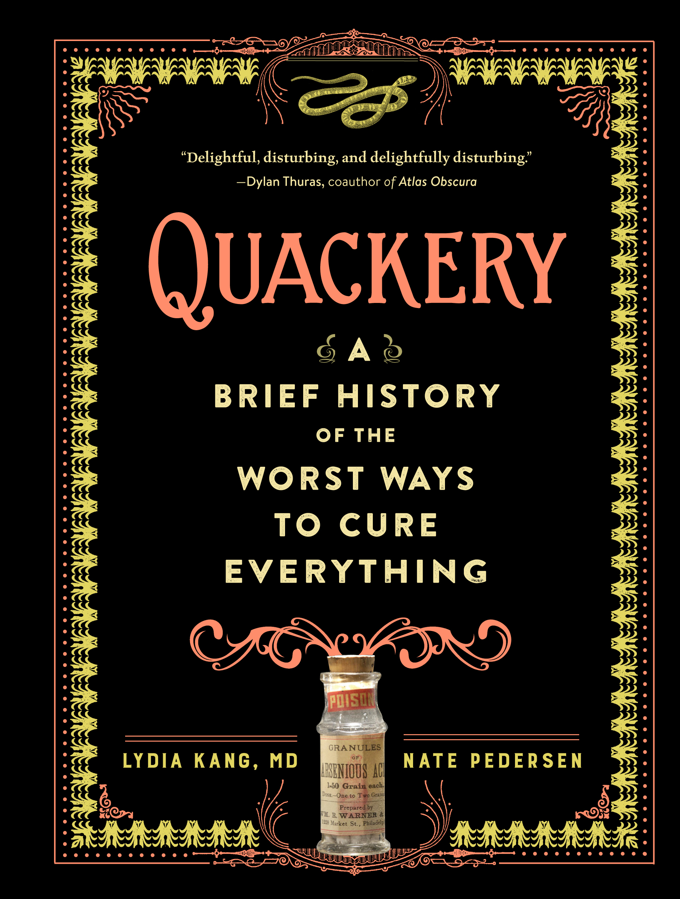
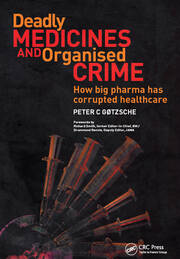

44:05 · 8 OPERE
La lezione del passato.
Il filo del discorso
Il caso Pandemrix è il punto di partenza di una riflessione sul valore della memoria storica nella discussione sanitaria. Il relatore richiama Cicerone e Kant, presenta il segnale di narcolessia osservato dopo il vaccino antinfluenzale del 2009 e legge una inchiesta di Peter Doshi sulla trasparenza dei dati. Commenta poi uno studio finlandese e usa questa vicenda per criticare la comunicazione e le certezze espresse durante la pandemia del 2021, anno che indica nel parlato. Il percorso si estende a Semmelweis, alla valutazione di rischi e benefici, a un dibattito sugli psicofarmaci e alla formazione scolastica. Nella conclusione presenta libri sulla storia degli errori medici, sui conflitti di interesse e sulla corruzione delle istituzioni. La scheda distingue il rischio documentato per uno specifico vaccino dalle generalizzazioni ad altri prodotti e separa segnalazioni spontanee, studi epidemiologici e responsabilità individuali. La disponibilità al dubbio e al confronto viene così mantenuta distinta dalla trasformazione di un precedente storico in prova automatica delle accuse contemporanee.
I libri nel discorso

Orator (L’arte di saper parlare)
Identificazione probabile
Copertina: Newton Compton · Classici 53 · cura e traduzione Mario Scaffidi Abbate, latino a fronte
Immagine autentica dell’opera, controllata visivamente; l’edizione di riferimento non è attribuita al filmato.
Cicerone e passo sull’ignorare ciò che accadde prima della nascita: riscontro in Orator 120, titolo non pronunciato.
Passaggio 1:19 ↗ · Fonti e libro ↗
Risposta alla domanda: che cos’è l’Illuminismo?
Copertina della raccolta che comprende il saggio sull’Illuminismo: Firenze University Press · Sette scritti politici liberi · 2011 · a cura di Maria Chiara Pievatolo
Copertina del volume cartaceo FUP che comprende il saggio, riscontrato dal catalogo universitario. L’ISBN appartiene alla raccolta; il filmato non annuncia un’edizione e il titolo del saggio è un’identificazione probabile della citazione.
Kant e Checosèl Illuminismo espliciti, richiamati per l’uscita dalla minorità.
Passaggio 2:22 ↗ · Fonti e libro ↗
Pandemrix vaccine: why was the public not told of early warning signs?
Prima pagina dell’articolo: The BMJ 2018;362:k 3948, 20 settembre 2018, DOI 10.1136/bmj.k 3948. Immagine della prima pagina dell’articolo, con testata, titolo e autore, da PDF conservato nel portale New Zealand Doctor; non una copertina libraria.
Riproduzione documentaria della pagina iniziale del PDF BMJ, non una copertina. Il testo integrale della fonte è conservato soltanto nell’archivio privato.
BMJ 2018, titolo tradotto sui primi segnali e autore riconoscibile Doshi: articolo identificato, distinto dallo studio epidemiologico.
Passaggio 8:15 ↗ · Fonti e libro ↗
AS03 Adjuvanted AH1N1 Vaccine Associated with an Abrupt Increase in the Incidence of Childhood Narcolepsy in Finland
Identificazione probabile
Prima pagina dello studio: PLOS ONE 7(3):e 33536, 28 marzo 2012, DOI 10.1371/journal.pone.0033536. Prima pagina integrale del PDF editoriale; articolo ad accesso aperto, copyright degli autori con licenza Creative Commons Attribution.
Riproduzione della prima pagina, non una copertina di libro. Il grafico temporale discusso si trova nella figura 1 del medesimo studio.
Grafico con quattro definizioni di esordio e diagnosi, poi autrice Nohynek a 21:28: riscontro configura 1 del PLo SONE 2012; titolo completo non pronunciato.
Passaggio 17:56 ↗ · Fonti e libro ↗
Quackery: A Brief History of the Worst Ways to Cure Everything
Identificazione probabile
Copertina: Workman Publishing Company, 17 ottobre 2017, edizione rilegata, ISBN 9780761189817. Copertina editoriale nera con decorazioni gialle e rosse e bottiglia di arsenico; non è un manuale terapeutico.
Immagine autentica dell’opera, controllata visivamente; l’edizione di riferimento non è attribuita al filmato.
Quackery e sottotitolo tradotto sulla storia dei peggiori modi di curare tutto; autori non pronunciati, identificazione probabile.
Passaggio 37:10 ↗ · Fonti e libro ↗
Deadly Medicines and Organised Crime: How Big Pharma Has Corrupted Healthcare
Copertina: CRC Press, prima edizione, ISBN 9781846198847; la scheda editoriale corrente indica copyright 2014 e 322 pagine. Immagine autentica del catalogo CRC / Routledge, non una presunta edizione vietata.
Immagine autentica dell’opera, controllata visivamente; l’edizione di riferimento non è attribuita al filmato.
Titolo e sottotitolo tradotti, autore poi richiamato foneticamente e CRCPress esplicito.
Passaggio 37:59 ↗ · Fonti e libro ↗University, Inc.: The Corporate Corruption of Higher Education
Copertina: Basic Books, brossura del 22 agosto 2006, ISBN 9780465090525, con una nuova introduzione dell’autrice. Prima edizione del 2005; il catalogo Wellcome registra il sottotitolo The Corporate Corruption of American Higher Education.
Immagine autentica dell’opera, controllata visivamente; l’edizione di riferimento non è attribuita al filmato.
University Inc, sottotitolo e cognome Washburn espliciti.
Passaggio 38:31 ↗ · Fonti e libro ↗Systemic Corruption: Constitutional Ideas for an Anti-Oligarchic Republic
Copertina: Princeton University Press, 22 settembre 2020, edizione rilegata, ISBN 9780691207537. Copertina dell’edizione inglese; il titolo italiano nel video è una traduzione descrittiva, non una edizione italiana verificata.
Immagine autentica dell’opera, controllata visivamente; l’edizione di riferimento non è attribuita al filmato.
Titolo e sottotitolo tradotti, Princeton University Press, anno 2020: convergenza su Camila Vergara, non nominata nel parlato.
Passaggio 39:36 ↗ · Fonti e libro ↗